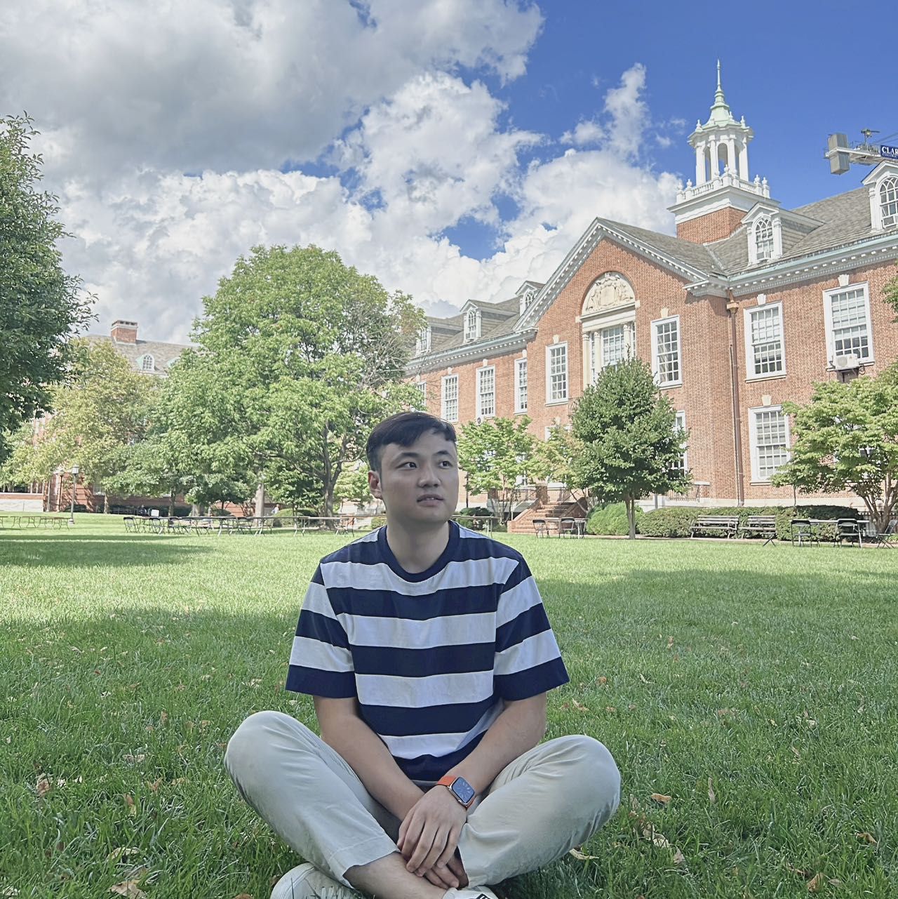
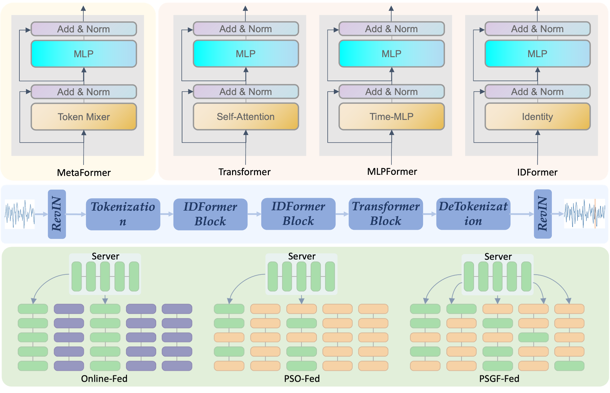
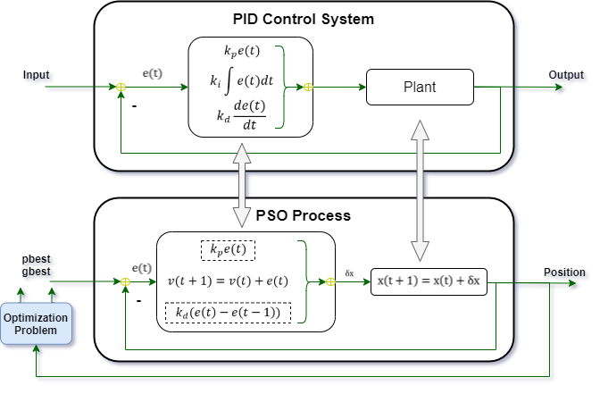
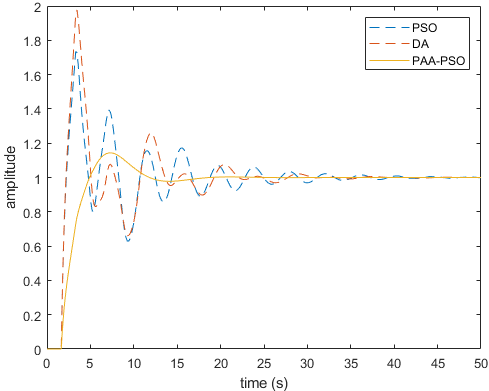

|
I am a first-year PhD student in Department of Computer Science of Johns Hopkins University and supervised by Prof. Vishal Patel in VIU Lab. Before my PhD study, I worked with Dr. Adam Kortylewski and Prof. Alan L. Yuille as a research intern in CCVL. I completed my M.Sc degree in Texas A&M University and worked closely with Prof. Shankar P. Bhattacharyya and Prof. Zixiang Xiong. Before coming to U.S., I obtained my bachelor degree from University of Science & Technology of China (USTC). |
 |
{kind=link}
|
|

|
Jiacong Xu, Yi Zhang, ..., Alan Yuille, Adam Kortylewski ICCV, 2023 bibtex | github | Website Animal3D consists of 3379 images collected from 40 mammal species, high-quality annotations of 26 keypoints, and importantly the pose and shape parameters of the SMAL model. We demonstrate that synthetic pre-training is a viable strategy to boost the model performance. |

|
Jiacong Xu, Zixiang Xiong, Shankar P. Bhattacharyya CVPR, 2023 bibtex | github | ranking SOTA for real-time semantic segmentation. PIDNet possesses three branches to parse the detailed, context and boundary information, respectively, and employs boundary attention to guide the fusion of detailed and context branches in final stage. |
|  |
Jiacong Xu, Riley Kilfoyle, Zixiang Xiong, Ligang Lu APSIPA ASC, 2023 bibtex | github | Arxiv In this paper, we propose a communication-efficient time series forecasting model combining the most recent advancements in transformer architec- tures implemented across a geographically dispersed series of EV charging stations and an efficient variant of federated learning (FL) to enable distributed training. |
|  |
Jiacong Xu, Shankar P. Bhattacharyya FICC, 2022, Best Student Paper bibtex This paper analyzes the connection between the PID controller and the PSO Algorithm and proposes two novel methods, PBSv2 and PAA, to enhance the performance of the PSO algorithm and its variants. |
|  |
Jiacong Xu, Shankar P. Bhattacharyya ICSC, 2021 bibtex This paper proposes a approach for online or real-time tuning of PID controllers in applications such as driverless cars or robot manipulators. |
|
Template modified from the Jon Barron original. |